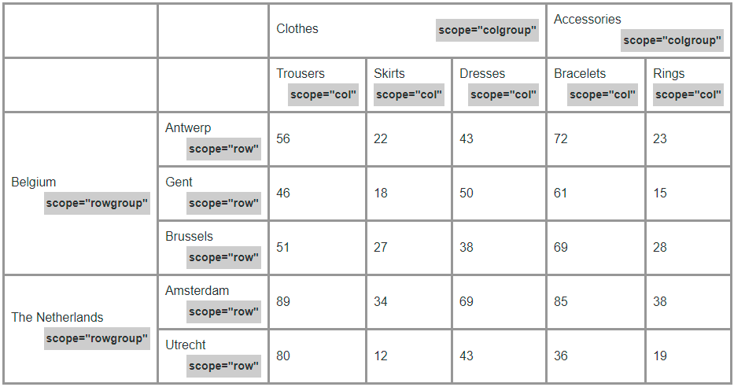

Resolvi participar da brincadeira e fiz minha compilação com 100 dicas de front-end.
Pode ser que muitas dessas dicas você já saiba, mas creio que até mesmo para os mais experientes possa ter algo de novo.
Resolvi dividir as 100 dicas em duas partes pois percebi que este texto estava ficando muito longo. Espero que não se incomode.
Então, vamos às dicas:
1 – Não deve ser novidade para ninguém que o HTML deve ser usado para marcar nosso conteúdo com tags semânticas. Quando for escrever seu código HTML, tente não pensar no resultado visual e foque no que cada informação da página representa.
2 – Partindo desse princípio, não há nada de errado em usar corretamente a tag <br> para gerar quebra de linha. Mas se você escrever dois <br>’s seguidos provavelmente o que você está querendo, na verdade, são dois parágrafos.
3 – Ainda sobre essa ótica, uma <aside> não precisa ficar, necessariamente, ao lado. A tag <aside> está diretamente relacionada ao que ela representa e não à sua posição no layout. Eu escrevi sobre isso aqui Quando o header é aside
4 – Outra tag que pode gerar confusão é o <address>. Essa tag não deve ser utilizada para mostrar um endereço, mas sim as informações de contato do dono da página ou da seção. Segundo o site da MDN, para representar um endereço arbitrário, um que não seja relacionado à informação para contato do dono da página ou da seção, use um elemento <p> ao invés do elemento <address>.
5 – Nós seres humanos sabemos que “22h00”, “22:00” ou “10 horas da noite” representam o mesmo horário. Mas para informarmos à máquina que se trata de um horário, precisamos escrever a marcação correta, ou seja, <time datetime="22:00">22h00</time>. Podemos, inclusive, acrescentar informações sobre o horário universal UTC: <time datetime="22:00-03:00">22h00</time>.
6 – Quando você precisar representar uma tecla do teclado, use a tag <kbd>. Exemplo: <p>Pressione <kbd>Ctrl</kbd> + <kbd>P</kbd> Para imprimir</p>.
7 – Quando você precisar incluir alguma citação externa na sua página, utilize as tags <blockquote>, <cite> ou <q> para isso.
8 – Imagens responsivas de verdade precisam utilizar o atributo srcset (faça o que eu digo, não faça o que eu faço 😁). Exemplo:
<img src=http://lorempixel.com/400/200/ srcset=http://lorempixel.com/600/300/ 600w, http://lorempixel.com/800/400/ 800w alt="texto alternativo convencional" sizes="(min-width: 480px) 33.33vw, 100vw">.
No código acima, informamos ao browser que se a viewport for menor que 480px, a imagem ocupará a largura total, caso contrário, a imagem ocupará 1/3 da tela. O browser irá decidir por conta própria qual a melhor fonte de imagem para renderizar na tela.
9 - Você pode incluir emojis no seu HTML ou CSS da maneira que escreve no seu celular
10 – A tag <picture> para imagens responsivas é opcional e é utilizado em conjunto com a tag <source> quando você tem mais de uma fonte de imagem.
Você pode ler a respeito no link que escrevi há muito tempo no medium design responsivo nos dias de hoje.
11 - Uma <dl> pode ter mais de um <dt> e <dd>.
Veja dois exemplos copiados na cara-de-pau do MDN.1
2
3
4
5
6
7
8
9
10
11
12
13
14
15
16
17
18
19
20
21
22
23
24
25
26
27
28
29
30
31<dl>
<dt>Firefox</dt>
<dt>Mozilla Firefox</dt>
<dt>Fx</dt>
<dd>
A free, open source, cross-platform,
graphical web browser developed by the
Mozilla Corporation and hundreds of
volunteers.
</dd>
<!-- Other terms and descriptions -->
</dl>
<dl>
<dt>Firefox</dt>
<dd>
A free, open source, cross-platform,
graphical web browser developed by the
Mozilla Corporation and hundreds of
volunteers.
</dd>
<dd>
The Red Panda also known as the Lesser
Panda, Wah, Bear Cat or Firefox, is a
mostly herbivorous mammal, slightly larger
than a domestic cat (60 cm long).
</dd>
<!-- Other terms and descriptions -->
</dl>
12 – Sabe quando você quer destacar um pedaço do texto e acaba envolvendo-o dentro de uma <span> com uma classe .destaque? Forte indício de que você estava querendo, na verdade, era usar a tag <mark>.
13 – Utilize as tags <del> e <ins> para representar textos removidos ou inseridos, respectivamente.
14 – O HTML5 possui um atributo que informa ao agente de usuário que o conteúdo de determinada tag pode ser editado pelo usuário. Deve ser utilizado em conjunto com o javascript. Segue um exemplo de utilização no mundo HTML.
1 | <p contenteditable="true"> Edite seu conteúdo </p> |
15 – Por padrão, a tag <a> recebe o foco quando o usuário navega pelo teclado. Se você precisar que outro elemento tenha o mesmo comportamento, utilize o atributo tabindex. Este atributo recebe um numero inteiro que representa a ordem de navegação.
16 – É possível incluir links que, ao serem clicados, abre o telefone em aparelhos mobile:1
<a href="tel:1-408-555-5555">1-408-555-5555</a>
17 – o atributo target="_blank" possui problemas de segurança em links. use rel="noopener noreferrer" para minimizar esse problema.
18 – microdados acrescentam mais valor semântico quando as tags HTML não são suficientes.
Como exemplo, avalie o código a seguir:
1 | <p> |
Não há nada de errado com o parágrafo acima, porém, a máquina não sabe que se trata de uma pessoa (Daniel) e nem tãopouco de um cargo (instrutor). Vamos corrigir isso usando microdados:
1 | <p itemscope itemtype="http://schema.org/Person"> |
Para saber mais http://schema.org
19 – Muito semelhante aos Microdados, que passa informações adicionais ao user-agent, o JSON-LD oferece informações padronizadas aos user-agents como os motores de busca. O conceito é muito parecido com os microdados mas os atributos não são mais inseridos no meio das tags HTML. Esse assunto é muito extenso (e pra ser sincero eu não sou a melhor pessoa pra falar sobre ele). De qualquer forma, segue um exemplo de código
1 | <script type="application/ld+json"> |
20 – Se possível, inclua <caption> como primeiro filho de suas <table> contendo uma descrição dos dados da tabela. Note que o atributo summary foi depreciado
21 – Nas células de sua tabela que representam cabeçalhos, troque as suas <td> por <th>.
22 – Inclua atributos scope nas suas <th> para informar ao agente de usuário se este cabeçalho se refere a linhas, colunas, conjunto de linhas ou conjunto de colunas.
Os valores possíveis são, portanto: row, col, rowgroup ou colgroup.
Vai ficar mais fácil entender com uma imagem

23 – Agora falando de formulários, utilize as tags <fieldset> para criar grupos lógicos de suas entradas de dados.
24 – A tag <legend> acrescenta uma descrição ao <fieldset>.
25 – Faça um vínculo entre o texto que aparece ao usuário e o seu respectivo input com a tag <label>. Voce pode fazer esse vínculo de duas formas:
26 – Com o atributo id que deve ter o mesmo valor do atributo for do <label>.
Veja um exemplo:1
2<label for="user">Usuário</label>
<input type="text" id="user" name="txtuser" />
27 – Ou envolvendo o input e o texto com a tag <label>.
Mais um exemplo:1
<label>Usuário <input type="text" name="txtuser" /></label>
28 – Nunca, mas NUNCA, crie um <input type="radio"> ou <input type="checkbox"> sem um <label> relacionado. Isso cria um vínculo entre o campo e o texto que aparece para o usuário. Isso é regra básica para melhorar a acessibilidade de sua interface.
30 – É permitido ter dois <label> para o mesmo input. Não há nada de errado com isso.
31 – Se a função da sua página é fazer com que o usuário digite algo em um input, como por exemplo uma página de busca ou um formulário de login, acrescente um atributo autofocos no seu input. Isso também facilita a usabilidade
32 – Voce pode utilizar a tag <optgroup> para agrupar <option> dentro de um <select>.
1 | <select> |
33 – Se vc tem um texto muito grande sem espaço (exemplo de uma URL) e está quebrando em aparelhos mobile, pode colocar <br> opcionais. Como? Com a tag <wbr>. É só colocar essa tag onde você quer que quebre para a próxima linha se for necessário.
Exemplo:1
2<p> http://www.serfrontend.com/<wbr>qualquer/<wbr>url/<wbr>/bem/<wbr>grande...</p>
34 – Ao contrário do <wbr> há também a tag <nobr>, que diz para o navegador que não pode quebrar linha. Mas atenção: essa tag foi depreciada e não deve ser usada. Use CSS no lugar.
1 | <span style="white-space: nowrap">Texto longo sem quebras de linha</span> |
35 – Outra tag que foi depreciada e, portanto, não deve ser usada é a <hgroup> que servia para agrupar títulos. Não a use.
36 – A tag <figure> não tem nada a ver com figuras. Ela é usada para demarcar uma área independente do documento. Algo que, se for removido da página, não causa prejuízo ao conteúdo principal.
37 – dentro de <figure> você pode incluir um <figcaption> que representa uma legenda da tag <figure>.
38 – Outra tag bem importante para semântica é a <abbr>. É usada quando temos abreviações. Você pode ter pensado em <acronym>, mas esta foi depreciada.
1 |
|
38 – Coloque o atributo lang no seu <html> indicando qual é o idioma da página. E coloque o atributo lang em outras tags atualizando o idioma quando necessário. Exemplo:1
2
3
4
5
6
<html lang="pt-br">
<body>
<p> Eu amo o <i lang="en-us">Hypertext Language Markup</i>.</p>
</body>
</html>
39 – Falando agora de CSS. Já precisou colocar uma borda interna em um elemento? Não faça gambiarras. Você pode incluir um outline e um outline-offset. Inclusive pode animar a distância interna da borda.
1 | div{ |
See the Pen
outline animated by daniel tapias morales (@tapmorales)
on CodePen.
40 – Provavelmente vc já sabia que dá pra incluir um contador com CSS.
1 | main { |
Mas além disso, dá pra definir qual número inicial da contagem.
1 | main { |
Agora a contagem começará em 10.
41 – Sabia que dá pra ampliar ou diminuir uma sombra do box-shadow? É só passar um valor adicional antes da cor. Este valor é um número em pixels. Se positivo, então a sombra é ampliada. Se negativo, a sombra é reduzida.
1 | box-shadow: 2px 2px 2px 10px rgba(0, 0, 0, 0.2); |
A sombra será ampliada 10 pixels.
42 – Por padrão, as células de uma tabela são separadas umas das outras. Para mudar esse comportamento:
1 | border-collapse: collapse; |
43 - provavelmente você já conhece text-decoration: underline; Mas saiba que dá fazer coisas muito mais legais, como por exemplo:
text-decoration: underline wavy #c09; que na verdade é um atalho para1 | text-decoration-line: underline; |
See the Pen
VqJGxz by daniel tapias morales (@tapmorales)
on CodePen.
Isso não vai funcionar no IE. Mas é a vida!
44 – Media-queries não gera especificidade. Isso significa que o código abaixo não funciona da maneira que você espera.
1 | @media screen and (min-width: 1000px) { |
45 - No flexbox, não existe horizontal e vertical. O que existe é eixo principal (main axis) e transversal (cross axis). Você pode falar que o eixo principal é horizontal com flex-direction: row; e que é vertical quando flex-direction: column. Um detalhe importante é que isso é válido apenas em escritas horizontais (dir=ltr).
46 – Há um espaço obrigatório entre elementos com display: inline-block assim como há um espaço entre duas palavras (elementos inline). Existem gambiarras que removem esses espaços, mas todas elas são muito feias para constar nessa lista.
47 – Provavelmente você já conhece background-repeat. Sabia que esta propriedade aceita dois valores pouco usados: round e space? Pois é, elas tratam como a imagem de fundo irá se repetir.
Ambos os valores fazem com que a imagem de fundo que se repete nunca seja cortada (exceto quando o valor for space e a imagem for maior do que o elemento). A diferença é que enquanto o valor space distribui as imagens igualmente no espaço interno do elemento, o valor round aumenta ou diminui a imagem de fundo para que se ajuste ao elemento.
See the Pen
oJraqM by daniel tapias morales (@tapmorales)
on CodePen.
48 – Já tentou aplicar box-shadow num elemento com transparência e o resultado não foi exatamente o que você esperava? Tente trocar o box-shadow por filter: drop-shadow(). A diferença é que este respeita a transparência do conteúdo, seja um .png transparente, um svg ou até mesmo um desenho criado pelo próprio CSS.
49 – Sabia que dá pra utilizar no CSS qualquer valor passado por atributo HTML? Para isso, basta usar o attr(). Veja um exemplo:
1 | <div data-index-number="12314"> |
CSS:1
2
3div::before {
content: attr(data-index-number);
}
Importante notar que este conteúdo não está acessível em tecnologias assistivas ou motores de busca. Nem mesmo é possível que o usuário selecione este conteúdo na página.
50 – Para incluir o valor do atributo href dinamicamente em link quando impresso ou salvo em pdf, utilize a seguinte regra:
1 | @media print{ |
O que esta regra faz é incluir depois do texto do link o valor do atributo href entre parênteses, apenas em impressões ou PDF’s.
Por enquanto é isso. Em breve apresentarei mais 50 dicas de front-end.
Obrigado pela leitura